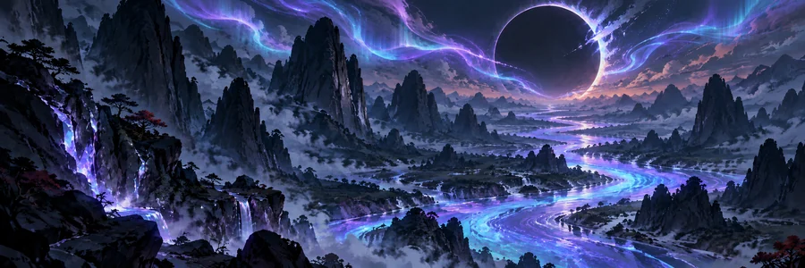

Apresentação do projeto
O mundo mudou.
A investigação começa agora.Sinopse
No fim de dois mil e vinte e seis, um asteroide passou perto da Terra. Durante sete horas, seu brilho atravessou o céu. O mundo chamou aquele fenômeno de Centelha.
Sua passagem trouxe uma onda que interrompeu o fornecimento de energia e as comunicações por quarenta e oito horas. Enquanto fragmentos do asteroide alcançavam a superfície, rios de luz se formavam no céu. Foram chamados de Lágrimas Cintilantes. Sob aquela luz, o mundo começou a mudar.
Foi assim que o Codex chegou. Um material capaz de transformar aquilo com que entra em contato. A água, o solo, as plantas, os animais e as pessoas.
Agora, em dois mil e vinte e nove, a humanidade começa a compreender parte dessas transformações. Novos equipamentos chegam ao mercado. Pessoas aprendem a conviver com capacidades que ainda não dominam. Empresas financiam pesquisas e disputam acesso às regiões afetadas. Cada descoberta representa uma oportunidade de avançar. E de chegar antes da concorrência.
Vocês foram contratados pelo Grupo Boreal para integrar uma expedição a uma região montanhosa. Ali, rios luminosos atravessam vales habitados e antigos mosteiros. Os instrumentos registram uma concentração extraordinária de Codex, mas ninguém conseguiu determinar a origem dessas leituras.
A missão é estabelecer uma base, investigar as alterações e relatar as descobertas.
Aquelas montanhas, porém, já têm moradores. Pessoas que bebem daquela água, cultivam aquele solo e aprenderam a viver com suas transformações. Há comunidades tentando preservar suas terras, pesquisadores buscando respostas e pessoas dispostas a explorar as novas possibilidades da região.
A Boreal espera resultados. Outras equipes também estão procurando. Conforme a investigação avança, vocês precisarão decidir em quem confiar, quais riscos aceitar e o que fazer com as informações que encontrarem.
Uma descoberta pode garantir recursos para a expedição. Um relatório pode atrair novos interessados. A localização de uma fonte de Codex pode transformar a vida de uma comunidade inteira.
O trabalho começa com um contrato. O que acontecerá depois dependerá das escolhas de vocês.
Eclipse Genético.
Próxima etapa
Seu registro faz parte
desta história.
O documento de agenciamento reunirá as orientações para o seu acesso individual ao projeto.